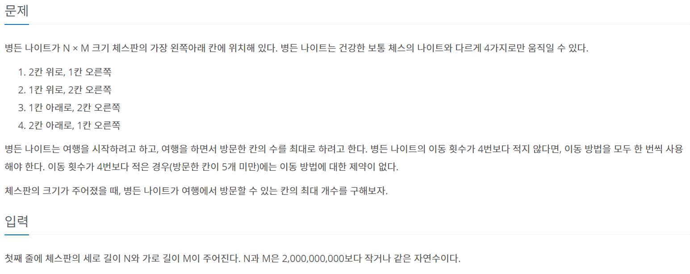
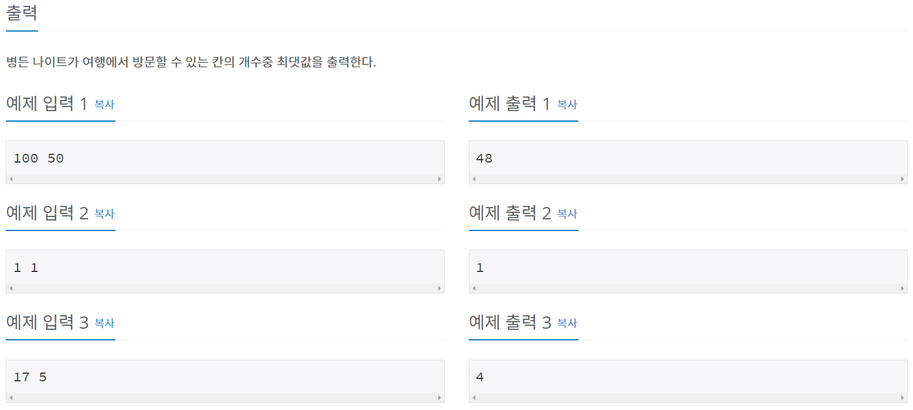
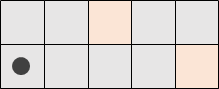
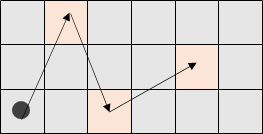
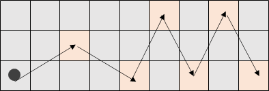
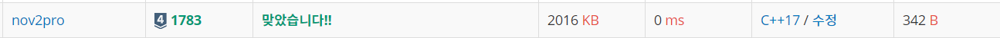

#문제정보
출처 : www.acmicpc.net/problem/1783
 
#문제분석
사용된 알고리즘 : 그리디(GREEDY)
다음 문제는 세로가 1 , 2 혹은 3 이상인 케이스로 나누어 생각해야 한다.
CASE 1 : 세로가 1인 경우
문제에서 제시한 1,2,3,4 이동방식 모두 사용 불가능하다. 따라서, 어느 방향으로도 이동이 불가능하므로 1칸이다.
(병든 나이트가 처음에 위치한 영역도 여행한 것으로 취급한다.)
CASE 2 : 세로가 2인 경우

2,3 이동방식을 통해 여행이 가능하기에, (M-1)/2 + 1(처음 나이트 위치) 만큼 이동이 가능하다.단, 문제 조건 "이동 횟수가 4번 이상인 경우에는 모든 이동 방법을 각각 한 번 이상 이용해야 한다." 를 지켜야 하기에, 최대 이동 횟수는 3 + 1 칸이다. (세로가 2인 상황에서는 애초에 1,4 이동방식을 이용이 불가능하기 때문이다.)
CASE 3 : 세로가 3 이상인 경우
세로가 3 이상인 경우는 약간 복잡하다. CASE3은 가로 길이까지 생각해야 하는데, 가로가 7칸 이상인 경우와 7칸 미만인 경우를 나누어서 생각해야 한다.

가로가 7칸 미만인 경우는, 1,4 번 이동방식을 이용해 M칸 만큼 여행 가능하지만, 문제 조건에 의해 최대 4칸 밖에 여행이 불가능한 구조이다.

하지만 가로가 7칸 이상이라면 얘기가 다르다. 1,2,3,4 이동방식을 모두 이용 가능하기에 4칸 이상을 여행 가능하다.
따라서, 총 M-2번 여행 가능하다.
#소스코드
#include <iostream>
#include <algorithm>
using namespace std;
int result;
int main()
{
int N,M;
cin >> N >> M;
if (N == 1)
{
result = 1;
}
else if (N == 2)
{
result = min(4, (M-1)/2+1);
}
else
{
if (M >= 7)
{
result = M - 2;
}
else
{
result = min(4, M);
}
}
cout << result << "\n";
return 0;
}